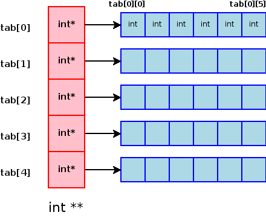

Fonctions utiles pour l'exam de C
Voici les fonctions les plus utiles pour l'exam
Si vous avez des questions ou qu'il y a un pb dans le sujet -> @Antonin#8156 sur Discord
Retourner aux exercices
Sur les chaines de caractères
strcpy( char * destination, char * source ): Permet de copier une chaine de carac
int strcmp( char * source1, char * source2 ): Permet de comparer une chaine de carac, retourne 0 si elles sont égales.
int strlen( char * source ): Retourne la taille de la chaine de carac
strcat( char * dest , char * source): Ajoute source à la fin de dest.
Exemple:
char ma_var[50] = "bonjour";
strcat(ma_var,"aurevoir");
printf("%s",ma_var); //bonjouraurevoir
sprintf( char * dest , char * format, others...): Fonctionne comme un printf seulement, au lieu d'afficher dans la console, la fonction stocke dans la variable de destination
Exemple:
char ma_var[50] = "bonjour";
sprintf(ma_var,"%d %s", 42, "Hello world");
printf("%s",ma_var); //42 Hello world
Allocation dynamique
void *malloc( size_t size ): Alloue dynamiquement de la mémoire. Pour la taille, faire n*sizeof(le type de la variable)
free(void *ptr): Libère de la mémoire dynamiquement allouée
Exemple pour un tableau d'entier de taille 10:
// Le (int*) correspond au type de notre variable
// 10 * sizeof(int), on veut que notre tableau soit de 10 fois la taille d'un entier
int *tableau = (int*) malloc( 10 * sizeof(int));
free(tableau);
Lecture de fichiers
FILE *fopen( char* chemin_du_fichier, char* mode ): Ouvre un fichier. Ne pas oubliez de tester si l'ouverture s'est bien passée avec in if(file != NULL)
2 modes importants:
- "r" : Lecture
- "w" : Ecriture
fclose(FILE * file): Ferme le fichier ouvert
int feof(FILE * file): Retourne 0 si on est à la fin du fichier
fscanf(FILE *stream, const char *format, ...): Fonctionne comme un scanf mais avec le fichier en premier paramètre. Ne pas oublier de passer l'adresse des variables en paramètre et non la valeur (mettre un & si ce n'est pas un pointeur)
Exemple pour la lecture d'un fichier contenant que des entiers:
int entier;
char mon_fichier[50] = "mon_fichier.txt";
FILE* file = fopen(mon_fichier, "r") // Ouverture en lecture
if (file != NULL){// Vérification que l'ouverture du fichier s'est bien faite
while(!feof(fe)){ // Tant que notre fichier n'est pas fini
fscanf(file,"%d", &entier); // Ne pas oublier le & si la variable n'est pas un pointeur
//traitement
}
fclose(fe);
}
Rappels sur les pointeurs
Une étoile correspond à un pointeur, deux étoiles correspond à un pointeur de pointeur etc...
Pour les tableaux une étoile correspond à un tableau à une dimension, deux étoiles -> un tableau de tableaux (2 dimensions) etc...

https://www.clubnix.fr/malloc_tableau_2_dimensions_C
Exemple:
int var Variable contenant un entier
int *var Pointeur pointant vers un entier
int **var Pointeur pointant vers un pointeur d'entier